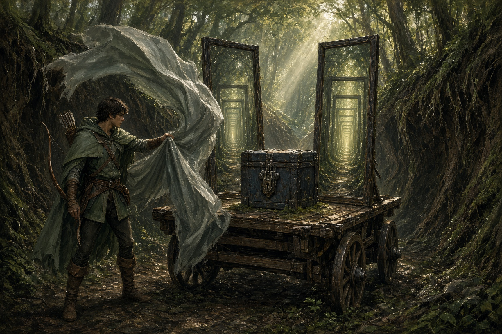

Emrys gave Don the wands at dawn.
He came out of the gray mist between the tents with a belt slung over one shoulder, yawning, his mop of dark hair flattened on one side from sleep, and dropped it into Don’s lap, jerking Don awake. It was a plain leather belt with loops sewn all the way around it, and every single loop held a wand.
Don looked at the bundle, blinking sleep out of his eyes. Then he really looked at it. He didn’t touch it. He looked like a little kid on the boardwalk staring at a whole freezer case of ice cream, like he couldn’t trust the universe to actually let him have something so nice, and waiting for the catch.
“Yew from the churchyard,” said Emrys, around a yawn. “That’s the long ones. Blackthorn from the fairy ring, those are the ones with the knots. Holly’s the pale ones.” He scratched his head. “The holly’s a bit temperamental. Don’t point it at anything you love.”
Don picked up a holly wand and turned it over in his long fingers. He tapped it, very gently, against the buckle, and a single bright blue spark jumped off the end and fizzed in the cold air and went out. He made a small noise. Nikko had never heard Don make a noise like that before, and it took him a second to place it, because it sounded almost like a prayer.
“Thank ’ee,” said Don, and he said it carefully, like it cost him something.
Emrys waved a hand. “It was fun.” He looked over at Nikko, who was sitting on a root with Tenmei across his knees, practicing the grip Lou had shown him the night before. Left hand down. Right hand back. Knuckles up. It still felt wrong, which Nikko had decided was probably the point. Emrys watched him for a while. He had a way of looking at things like he’d seen them before and was only checking to see if they’d changed.
“Hey,” said Emrys.
“Hey.”
“You’re the one who can’t decide what you want.”
Nikko blinked. “What?”
“Don’t worry about it.” Emrys grinned, a lopsided, sixteen-year-old grin, all teeth. “Nobody really gets to choose what they want until they’ve been both kinds of old. Everything before that’s just practice.” He yawned again, enormously, like a cat. “I’m going back to bed.”
He went. Nikko watched him go, frowning, and turned the words over a few times looking for the part that made sense. He didn’t find it.
“What does that mean?” he asked. “Both kinds of old?”
“Means he’s a hedge-whittler what’s been at the mead,” said Don, who was already buckling the belt around his waist with fingers that weren’t quite steady. “Pay ’im no mind. Look at this. Look at this, Lou.”
Lou, who was sitting by the cold fire eating a cold piece of bread, looked at it.
“It is a belt,” said Lou.
Robin told them the plan under the great oak while the Merry Men strung bows and checked arrows and filled their quivers all around them.
“It’s the tax,” he said. “Simple as that. Twice a year the Sheriff gathers up what he’s squeezed out of every village between here and Mansfield and carts it up to Nottingham to fill John’s strongroom. Silver, mostly. Grain. Whatever they can sell.” He scratched a line in the dirt with an arrow. “It comes up the old road through Linby and crosses the ford at the Leen. There’s a stretch about a mile long before the ford where the road goes down between two high banks. A hollow lane. Trees on both sides.”
“Good for archers,” said Little John.
“Normally,” said Robin. “But they’ll have mirrors this time. They always have mirrors now.” He tapped the line in the dirt. “And the hollow lane runs out into the ford, and the ford’s open water, and the banks fall away on both sides of it. Nowhere to hide. Last time we tried this, we lost four men in the open before we got a single shot off.”
Nikko looked at the line in the dirt and thought about the Exart on the road with his own face in its head, shoving him down into the mud. His thumb found his right palm and started rubbing.
“So what do you need us for?” he asked.
Robin looked up at him. His bright eyes were creased at the corners, and for once they weren’t laughing.
“You,” Robin said, “are going to stand in the road.”
Don choked on his breakfast.
“You’ll stand in the road,” Robin went on, calmly, as if nobody was choking, “in the open, where every mirror they’ve got can see you. You won’t hit them. I saw what happened yesterday. You hold. They’ll come at you, and they’ll take your shape and your spear and push you exactly as hard as you push them. So you push just hard enough to stay standing and not one bit more, and you keep their eyes on you. Every one of them.” He drew a circle in the dirt around the line. “While their eyes are on you, they aren’t looking at the banks. And my lads will be in the banks.”
“You want to use ’im for bait,” said Don.
“I want to use him for a shield,” said Robin. “There’s a difference. A shield gets to stand up when it’s over.” He turned to Lou. “You’ll take the soldiers. Gently, if you like. I gathered yesterday you like it gentle.”
Lou said nothing, and managed to make it sound like agreement.
“And you,” said Robin, turning to Don, “may not fire on a mirror. Not once. Not even a little.”
Don stared at him. He put one hand over his new belt as if Robin had threatened to take it away.
“Then what,” Don said, “am I for?”
Robin smiled.
“The ground,” he said.
The hollow lane was exactly what Robin had said it was, which Nikko was beginning to understand was its own kind of warning.
The road went down between two banks as high as a house, so old and so deep that the trees on top had grown their roots right down the sides like fingers holding on. The light in the lane was green and dim. At the far end, where the banks fell away, Nikko could see the ford: a wide shallow crossing, the water brown and fast and glittering where the morning sun hit it.
Nikko stood in the middle of the road with Tenmei in his hands and waited.
His palms were sweating. He wiped them, one at a time, on his jacket, and put them back. Left hand down. Right hand back. Knuckles up. He could feel the Merry Men in the banks above him, though he couldn’t see a single one of them, and that was the point. Robin was up there somewhere too. So was Don, somewhere on the left bank, with a belt full of wands and an expression Nikko had last seen on a kid in Shin-Seibu about to light a firecracker in a trash can.
Lou was nowhere at all. Lou had walked into the trees before dawn and hadn’t come back, and when Nikko had asked where he’d gone, Robin had only said, “He’ll be where he’s needed,” in a voice that suggested he’d asked Lou the same question and gotten the same answer.
Nikko heard the caravan before he saw it. Wheels, creaking, heavy wheels, more than one cart. Hooves. Men’s voices, bored and complaining about their feet. And under all of it something else, a sound like a wet finger running around the rim of a wineglass, high and thin and humming.
They came around the bend.
There were six carts. Four were piled with sacks and barrels and chests. One carried nothing but a single iron-bound strongbox, no bigger than a bread box, chained down to the bed of the cart, and standing over the box was something tall and narrow draped in a gray sheet. The last cart was full of soldiers.
There were more soldiers walking, twenty, maybe thirty of them. And between them, gliding along the road beside the carts with their blank silver heads turning from side to side and the yellow hearts cut into four shining on their chests, there were mirrors. Nikko counted seven. Then eight. He counted again. Then he stopped because it wasn’t helping.
At the head of the caravan, on a tall black horse, rode the strangest man Nikko had ever seen, and Nikko had recently met an elf.
He was big and broad, with a short black beard and a face that looked like it had been stepped on at some point and never quite recovered. And he was wearing a horse. That was the only way Nikko’s brain could put it. He was wearing the whole hide of a horse, a dun brown one, draped over his armor like a cloak, with the head still on it, the long horse skull pulled up over his own head like a hood so that he looked out from under the dead horse’s jaw. The mane hung down his back. The tail hung down behind him and swished against his living horse’s flanks, which the living horse did not seem to enjoy.
Nikko stared. The man in the horse saw him.
He reined in, and the caravan creaked to a stop behind him: thirty soldiers and eight mirrors and six carts, and one boy standing alone in the middle of the hollow lane holding a brass spear.
The man in the horse looked at Nikko for a long moment. Then he looked up at the banks, left and right, and he looked for a long time.
“Loxley,” he said at last, quite calmly, to the trees. His voice was deep and rough. “If you think I’m riding into this lane behind a boy and a shiny stick, you’ve gone soft in the head.”
The trees didn’t answer.
The man in the horse sighed and looked back down at Nikko. “Who are you, boy?”
Nikko thought about it. It seemed like the kind of question that deserved a real answer, and he didn’t have one.
“Somebody standing in the road,” he said. “Why are you wearing a horse? Doesn’t it stink?”
The man in the horse laughed, a big, surprised laugh that shook the dead horse’s head on top of his own. Then he stopped laughing, and his face under the horse skull went flat and ugly.
“Kill him,” said Guy of Gisborne.
The mirrors came first.
All eight of them came at once, gliding out from between the carts with their four little eye spots fixed on Nikko and the sunlight sliding off them like water off a window. They came fast. And as they came, they changed. Their arms lengthened into spears, black and glossy, with three short cross pieces under the heads. Their legs bent into his stance. Their silver faces rippled and cleared, and in every one of them, there was Nikko. Eight of him, coming down the road at him with his own face.
He didn’t swing.
It was the hardest thing he had ever done. Every bit of him wanted to. The anger was right there, hot and ready, the anger from the roof, and he could feel it pushing up out of his stomach and through his arms into the spear, and Tenmei warmed toward gold in his hands, and he thought, Hold. Don’t hit. Hold.
He planted his feet and held the spear out crosswise in front of him the way Lou had shown him, the way Lou had held his own arms out on the road, and when the first mirror crashed into him he caught its spear on the haft of his own and pushed back just enough to stay standing.
The mirror pushed back. Exactly as hard.
The second one hit him from the side, and he turned and caught it, and pushed, and it pushed back. The third came from the other side and then he was holding two of them, one on each end of the spear, his arms burning, and the face of the one on the left was snarling at him with his own mouth, and the face of the one on the right was snarling too, and they were both getting angrier, because he was getting angrier, because he couldn’t help it.
Don’t, he thought. Don’t get angry. They’ll take it.
So he thought about the beach instead. The crab on his ear, that first morning. The sand everywhere. Wren laughing, and Momo with her hand over her mouth trying not to, and her eyes crinkling anyway.
The mirror on the left stopped snarling. Its face went slack and puzzled, and for a second it was just Nikko’s face, looking at something very far away. And it didn’t push nearly so hard.
But the mirrors kept coming. Five of them now, six, all around him, pressing in, pushing, holding, and he was holding all of them, just barely, his feet sliding in the mud of the road and his arms shaking. All eight of them had their faces fixed on him, being him, being distracted and vacant and thoughtful… All eight of them were looking at nothing…
That was when the banks opened fire.
The arrows came out of the trees like rain, gray feathers whistling. The first one took a mirror through the back of its head, and the mirror froze, and a crack ran down through Nikko’s face in its head, and it shattered with a sound like a window breaking. A second went the same way, and then a third, bursting into black glass and the glass into ink and the ink into steam, and every time one broke the weight against Nikko’s spear got a little lighter.
Then the rest of them stopped pushing.
All five at once, as if one of them had thought it for all of them, they let go of Nikko and turned their heads toward the banks. The faces drained out of them and they went blank and silver again, and Nikko could see the trees in them, small and bent, and the gray feathers coming. The next arrow hit a mirror square in its shining chest and came straight back out of it, the way Don’s lightning had on the road, and buried itself in the bank a foot below the leaves it had come from. Somebody up there swore.
The mirrors split up. Two went for the right bank and three for the left. They didn’t bother with the road. They went straight up, gliding along old roots that hung down the sides of the hollow lane like ladders, finding handholds Nikko couldn’t see, climbing toward the archers with their silver heads turning this way and that, looking for a face to wear.
Nikko started after them and stopped, because up the road Guy of Gisborne was roaring and the soldiers had broken ranks. Thirty of them, swords out, spears down, came pounding down the hollow lane at him in a wave of steel and dirty tabards.
And Lou stepped out of the trees on the right bank and into the road in front of them.
He didn’t say anything. He just stood there, huge, his bandaged shoulder hunched and his hands open at his sides. His one amber eye moved from soldier to soldier. The front of the charge saw him and tried very hard to stop, but the back of the charge didn’t see him and couldn’t stop, and the two halves had a short, loud disagreement about it. The first man to get loose of the tangle ran at Lou anyway, which Nikko thought said something about either his courage or his eyesight.
Lou picked him up and tossed him into a tree.
The second one he threw into the same tree. The third he took by the back of the belt and the collar and swung once, gently, and let go, sailing the man out over the road and landing him with a splash in the ford. After that the charge became more of a nervous shuffle to avoid being at the head of the queue. Most of the soldiers bunched up in front of Lou like water in front of a rock, but the lane was wide. Wide enough that two of them evaded Lou and came around at Nikko.
Nikko didn’t have time to be scared. The first soldier came in with a short sword up, and Nikko did the only thing he’d practiced so far: he held. He caught the sword on the haft, but the man was much stronger than a mirror, and he didn’t push back exactly as hard as Nikko did. He tried to overpower Nikko, pushing harder and harder until Nikko had to find a direction to move all that weight. As the soldier overbalanced, Nikko let the spear turn in his hands, left hand down, right hand back, knuckles up, and the blunt end came around almost on its own and met the side of the man’s helmet with a sound like a dropped pot.
The soldier sat down in the road and stayed there, looking surprised.
The second one was smarter and came in low with a spear. Nikko skipped back, tripped over the first one, and somehow turned the fall into something like a step, like he was saving a bad landing back onto a board. Tenmei’s butt came up off the ground and caught the man under the chin. He went over backward and lay in the mud blinking at the sky.
Nikko stood over the two of them, breathing hard, waiting for the anger, but it didn’t come. Tenmei was brass and cool in his hands. He was very calm, even a little amused. He looked at the two dazed men at his feet. “Sorry, guys. Not sure what happened.” Then he remembered the mirrors and looked around.
The mirrors had nearly reached the top of the banks.
And from the top of the left bank, an elf started singing.
“Ess, down she go, my lover, down along the drang! An’ dreckly she’ll be teasy up aneath the dram! ’Ee never seen such a gurt muck-up! Yet be ’appy ta knoo~oow!”
It was his strange elvish, Nikko thought, a jaunty, rolling tune made mostly of words Nikko didn’t know, and Don was singing it at the top of his lungs while he stood on the very edge of the bank with a blackthorn wand in each hand. Three mirrors were climbing hand over hand up the roots right below him, their silver heads tipped up toward him and already starting to ripple into an elf’s long face. He didn’t point at them. He pointed both wands straight down, past them, at the bank itself, the old earth under the mirrors and under his own feet.
“Down she go, me ’ansums! Down she goes!” Don yelled, delighted, and fired.
The bank exploded.
It went out from under him like a wave breaking. Tons of earth and stone and old roots and whole living trees came sliding down into the hollow lane in a roaring brown wall, and the three mirrors went down with it, and Nikko heard them break somewhere under it, one, two, three, like bottles going into a bin. The slide poured across the road and cut the lane in two, with Lou and Nikko and the near carts on one side and Gisborne and most of his men on the other, and the soldiers at the edge of it threw themselves backward and the ones behind ran into them and the whole charge went down in a heap. When the dust cleared there was a hill where the road had been, with little wisps of black steam leaking out of it.
Across the lane, the two mirrors on the right bank had stopped climbing to look. That was a mistake. They had their backs to the trees now, and the Merry Men did not need asking twice. Two arrows, two windows breaking, and that was the last of them.
Don was standing on the edge of the brand new cliff he’d made, arms spread out for balance, the blackthorn wands burned down to smoking stubs in his fists. He was grinning like a lunatic.
“Never touched a single mirror!” he shouted down at Nikko. “Not one! Did ’ee see? Did ’ee see that, emmet?”
“I saw!” Nikko shouted back.
“A mirror can’t reflect a landslide!” Don howled with laughter and flicked the stubs away like cigarette butts. “Can’t reflect a bloody landslide!” He pulled a yew wand off his belt and pointed it at the ford down the road, and the ford went from brown water to brown mud so thick and deep that the last cart, the one full of soldiers, sank to its axles and stuck there and wouldn’t move no matter how the horses strained.
Guy of Gisborne had his sword out. He was riding his black horse back and forth along the far side of the landslide screaming at his men, at the banks, at the trees, with the dead horse’s head bouncing on top of his own. An arrow hit the horse skull and stuck there, quivering. Gisborne stopped. He reached up slowly and felt the arrow sticking out of the skull an inch above his own head, and then he looked up at the trees.
The forest laughed at him.
He turned his horse and ran.
When the last of the soldiers had run or surrendered or been put in trees, the Merry Men came down out of the banks and started unloading the carts. Silver, mostly, like Robin had said. Grain. Barrels of salt. A great deal of cloth. They worked fast and quietly, passing things up the bank hand to hand in a long chain into the trees, and nobody seemed to be in charge of it, and nobody needed to be.
Don was helping, in his way. One of the grain carts had lost a wheel in the slide and sat tipped in the mud with its axle in the air, and while three Merry Men argued about how to lift it, Don strolled over, pulled a holly wand off his belt without even looking which one it was, and snapped it at the cart. The whole thing jumped a foot in the air, came down square on its three good wheels, and stayed there. A third of the wand was gone, a curl of blue smoke and a smell like struck matches coming off the end. Don didn’t so much as glance at the smoke as he stuck it back in his belt. He was already whistling.
Nikko stared at him. In Betwixt and in the garden he’d watched Don walk two fingers along the sticks on his belt over and over, the way some people count the last of their money, and only ever fire one when there was nothing else left to try. This morning alone Don had burned two blackthorns and a yew and now a holly, and he was whistling.
“You’re not counting them anymore,” Nikko said.
“Course I am.” Don looked down at the belt as if he’d forgotten it was there, which Nikko was fairly sure he hadn’t, and ran his thumb along the loops, full ones and empty ones. “Wood’s made fer burnin’, lad. A full pocket unspent is like as not to be a dead man’s pocket.” He patted the belt, and his ears came up, and he stood a little straighter than Nikko had ever seen him stand. “Besides. Plenty more where those came from.”
There weren’t, Nikko thought. Not really. There was one belt, and one Emrys, and whatever Emrys felt like whittling when he wasn’t asleep. But Don looked so pleased with himself, so easy in his own long bones, that Nikko didn’t say it.
Don wandered off to see about another cart. Nikko noticed, though, that when the elf thought nobody was watching, his fingers went back to the belt and walked along it, loop by loop, and stopped for a moment at each empty one before they moved on.
Robin walked straight past all of it to the cart with the strongbox.
Nikko followed him. He wanted to sit down and have a nap. He wanted a big bowl of venison, or better, a whole pizza. His arms were still shaking and every muscle across his shoulders felt like it had been wrung out and hung up to dry, but he couldn’t stop looking at the tall thing on the cart under the gray sheet.
Robin stopped at the cart and looked at the sheet for a while. Then he took one corner of it and pulled it off.
Under the sheet there was a mirror. It was tall and narrow, about the height of a man, standing upright on the cart bed over the iron-bound strongbox. It had no frame; its edges were just edges, sharp and silver. But it wasn’t a mirror the way the strange Exarts were mirrors. It wasn’t shaped like a person, and it had two faces, a front and a back, both of them mirrors, facing in opposite directions. Nikko didn’t understand why that made him feel sick until he stepped to the side and saw both of them at the same time.
There was a corridor inside it. A long, silver hallway stretching back and back into the mirror, much farther than any mirror could possibly go. And in the hallway there were mirrors, two of them, facing each other, and inside those mirrors there was another hallway, and more mirrors, and more hallways, going back and down and in forever, smaller and smaller, until they were too small to see.
The strongbox sat at the bottom of all of it, on the cart bed, under the mirror. Right there. Two feet away.
Robin reached for it.
His hand went toward the box and the mirror moved. Not much, just a shiver, like water when a stone goes in. And between Robin’s hand and the box there was another mirror. It hadn’t been there a second ago. It was a small one, the size of a hand, hanging in the air, and in it Robin’s own hand was reaching back at him.
He pulled his hand back.
“Huh,” said Robin.
“Let me try,” said Nikko.
“Lad—”
But Nikko was already reaching. Somebody needed the box, and he was standing right there, and that had always been enough. He reached for it, and between his hand and the box there was a mirror, and in the mirror his hand was reaching back at him. He reached past it. There was another one. He reached past that one too, and there were two more, and in each of them his hand, reaching, and in each of those more mirrors and more hands. He leaned in. He stepped up onto the cart. He reached harder.
The box got farther away.
It didn’t move. It was still sitting right there on the cart bed. But the space between Nikko and the box got longer. There were more mirrors in the way now, a lot more, a whole crowd of them hanging in the air like leaves, and out of every one of them came his own hand, and then his own arm, and then his own shoulder, and then whole Nikkos, small at first and then bigger, stepping out of the mirrors in front of him and turning around and putting their hands flat on his chest.
Holding him back.
They didn’t push. They didn’t fight. They just held, the way he’d held all morning, exactly as hard as he pushed, and every time he pushed harder there were more of them. He could see the box. It was right there. It was two feet away and a thousand miles away at the bottom of an endless corridor full of himself.
He leaned into it and gritted his teeth. He wanted it. He wanted to get that box for Robin more than he’d wanted anything since—
There were fifty of him now. A hundred. They filled the corridor wall to wall, every one of them with its hands out and every one of them holding him back, and every one of them had his face, and none of them were angry. They looked worried. They looked tired. They looked like they were sorry.
“Kid.”
A huge hand closed on his shoulder and pulled him backward off the cart.
He sat down in the road, hard. The corridor in the mirror was still there, but it was only a reflection again, going back and back. The crowd of Nikkos was gone. His face was wet, and he didn’t know when that had happened.
Lou was standing over him. He looked at Nikko for a long moment, and then he looked at the mirror, and then Lou did something very strange.
He turned around. He turned his back on the mirror completely, so that he was facing up the road toward the landslide with the cart behind him, and he took off his coat. It was a long, heavy coat of dark red wool, patched at the elbows, big enough to be a blanket for anybody else. He held it in both hands.
And he walked backward.
One step. Two. He didn’t look over his shoulder. He didn’t look at the mirror at all, and he didn’t reach for the box. He just walked backward, slowly and carefully, like a man walking into a dark room he knew by heart, until his back bumped gently against the edge of the cart. Then he lifted the coat over his head and dropped it behind him, over the mirror.
The reflections went out. All of them, all at once, like somebody blowing out the candles on a cake. One second there was a silver corridor going back forever, full of mirrors and hands and faces, and the next there was just a cart with a big lumpy shape on it under a red wool coat.
The shape under the coat shuddered once.
Lou turned around and laid one hand flat on top of the coat, gently, the way he’d set a soldier in a tree. Under his hand, something cracked. It was a small sound, very quiet, like ice on a pond in the morning. Then another. Then the shape under the coat slumped and went flat, and when Lou lifted the coat away there was nothing on the cart but a little scatter of black dust, already blowing off in the breeze, and the strongbox, sitting on the cart bed, chained down, exactly where it had always been.
Nobody said anything.
Robin was staring at Lou. Don, who had come down the landslide on the seat of his trousers and was standing at the back of the cart with his mouth open, was staring at Lou. Nikko, sitting in the road, was staring at Lou.
Lou shook the dust out of his coat and put it back on.
“How,” said Don finally. “How in all the long nights did ’ee know to do that?”
Lou didn’t answer. He sat down at the edge of the landslide with his back to all of them, and looked up the road toward Nottingham.
The strongbox was locked.
It was a big iron lock, old and ugly, and none of the Merry Men had a key that would fit it, and when Little John took a hammer to it the hammer bounced off and very nearly hit him in the face. Will Scarlet tried to pick it with a bent nail and broke the nail.
“Don,” said Robin.
“I don’t do locks,” said Don, offended. “I do lightnin’. An’ landslides now, apparently.” He looked thoughtful. “Very good landslides.”
Robin turned, slowly, and looked at Nikko. At the spear.
“Every tale I ever heard,” he said, “it’s the stranger with the magic stick who opens the door nobody else can.”
Nikko looked down at the spear in his hands, and then back at the box.
“It’s just a box,” he said.
“A box,” said Robin, “is only a very small door.”
Nikko knelt down in front of the cart. He didn’t know what he was doing, which was starting to feel normal. He touched the point of the spear to the lock, very gently, the way he’d touched it to the green door in the garden, and this time he didn’t think about wanting anything. He thought about Robin standing outside his own gate in the rain.
The sigil on the back of his right hand warmed. There was a click, and a thunk, and the lid came up.
They opened it properly under the great oak, back in the camp, with the Merry Men gathered around.
There was silver in it. Not much, compared to the carts, just little leather bags of it, heavy and clinking. Robin passed them back without looking at them.
There were papers in it too, a thick stack of them, folded and sealed with red wax. Robin took them out and broke the first seal with his thumb and unfolded it, and Nikko, looking over his shoulder, saw careful black writing and a big red seal at the bottom with a lion on it, and at the top, a name.
“What is it?” Nikko asked.
“A writ of forfeiture,” said Robin. His voice was very even. “It says that the lands and holdings of Sir Richard at the Lee are forfeit to the crown, by reason of treason against the throne. It’s signed by Prince John and sealed with the King’s seal.” He held it up. There was a blank space at the bottom, after the words on this day of, where a date should have been.
“What treason?” asked Nikko.
“None yet,” said Robin. “That’s why there’s no date.” He unfolded the next one. “Lady Margery of Blyth. Forfeit. No date.” The next. “The Abbot of Worksop. Forfeit. No date.” He went through them one by one, not hurrying. There were twenty of them. Thirty. A lord’s name on each, or a lady’s. Every great house in the shire.
Nikko watched his face. It didn’t change at all, and that was what frightened him.
At the bottom of the stack there was a paper older than the others. It was yellowed and soft at the folds, and the wax on it had been broken and resealed. Robin unfolded it, and read it, and stopped. He didn’t say anything for a long time.
“What is it?” Nikko asked quietly.
Robin’s thumb moved, once, across a line of writing near the top.
“It says I’m dead,” he said.
He held it out so Nikko could see. Careful black letters. Robert of Loxley, Earl of Huntingdon, being dead upon the King’s crusade, his lands and titles forfeit and passed to a name Nikko didn’t know. A lion seal.
“The first one,” said Robin. “The first one they ever made.” He folded it again, very neatly, corner to corner. “I always wondered what it looked like.”
Nikko didn’t know what to say. He thought about a man standing outside a gate in the rain. He thought about the hole in the street in Betwixt and the pizza sign far down in it, flickering and holding on.
Robin put the death writ inside his shirt, against his chest.
The last thing in the strongbox was a book, a small, thick ledger bound in brown leather with columns of numbers inside. Robin opened it and turned the pages slowly. Nikko couldn’t read it; it was all figures and abbreviations and the names of places. But he saw Robin’s finger stop on a line and stay there, and he saw the place-name written beside it in a careful clerk’s hand, again and again, at the end of every column.
Glassvale.
Behind them, Don had gone very quiet.
Nikko glanced at him. The elf was standing with his arms folded and his long ears flat against his head, and he wasn’t looking at the ledger. He was looking at Robin. At Robin’s face, and Robin’s hands, and the way Robin had gone straight through the silver and straight through the writs to the bottom of the box without hurrying, like a man who already knew what was waiting for him there.
Don didn’t say anything. But Nikko saw him see it.
Lou was still sitting on his own at the edge of the camp when Nikko found him later, with the afternoon going gold through the leaves.
Nikko sat down beside him, and stayed still beside the giant man for a while.
“How did you know?” Nikko asked finally. “About the mirror. The coat.”
Lou didn’t answer for so long that Nikko thought he wasn’t going to. He was looking at his own big hands folded in his lap, the knuckles scarred, the crystal set in the right one gone the color of weak tea.
“Where I am from,” Lou said at last, “when someone dies, you cover the mirrors.”
Nikko waited for more. There wasn’t any more.
He wanted to ask who. He could feel the question sitting right there in his mouth. But Lou was looking at his hands, and something about the set of his huge shoulders and his terrible stillness made Nikko close his mouth again. Instead he just sat there, close enough that he hoped Lou could feel he was there, the way Robin had sat with him.
After a long while, Lou put one enormous hand on top of Nikko’s head. He just rested it there for a moment, heavy and warm. Then he stood up, and neither of them said anything about it.
“Right,” said Don. “That’s that, then.”
It was evening. The fire was going, and the Merry Men were in high spirits, singing and passing cups around and counting silver, and Don stood up from his log in the middle of it all, buckled his new belt of wands a notch tighter, and clapped his hands together once.
“One job,” he said. “Done. Very good job. ’Ansum landslide, if I do say so, an’ I do. We thank ’ee for your hospitality, Master Loxley, an’ for the wood, an’ for the venison, an’ we’ll be on our way to Camelot in the mornin’.”
“Ah,” said Robin.
Don stopped. “What’s ‘ah’?”
“Nothing.” Robin was sitting across the fire, turning a cup in his hands. “Only, how were you thinking of going?”
“North an’ east,” said Don promptly. “Over the Trent an’ straight on through.”
“Through the fens.”
“If that’s the way.”
“It is the way.” Robin set his cup down. “It’s a long way of open marsh. Reed beds and black pools and standing water, a week’s walk in every direction. Still water. A great deal of still water.” He looked into the fire. “Did you ever wonder where the Sheriff gets his mirrors?”
Don’s ears twitched.
“There’s a Queen,” said Robin, “in a place called Glassvale. South and west of here. You’ll have heard Will sing about her. She has a mirror of her own, a great one, very old. They say she can look into it and see anything in the world that’s reflected in anything else. A pond. A puddle. A window. A man’s eye.” He let that sit. “And they say that where she looks, now, the mirrors can come through.”
Nobody was singing anymore.
“That ledger,” Robin said quietly, “says every penny John has squeezed out of this shire for two years has gone south to Glassvale. Every penny. Even the silver the lords raised to send riders after the King.” He picked his cup back up. “She doesn’t give her mirrors away cheap. And whatever John is paying her for, it isn’t only mirrors.”
Don said nothing.
“So you can cross the fens,” said Robin. “Of course you can. Three strangers, one of them a giant, one of them an elf with a belt full of wands, one of them a boy with a spear that lights up gold like a lantern when he’s angry. Walking for a week through still water, with the Queen’s eye in every pool.” He shrugged. “Or you can go by the Trent bridges, I suppose. But Gisborne got a very good look at the three of you this morning. I expect your faces will be on every bridge between here and Lincoln by Sunday.”
“Then we wait,” said Don stiffly. “We wait it out. We’re patient. I’m very patient. I’m eleven ’undred years old.”
“You could,” Robin agreed. “Or my lads could take you through. There are ways across the fens the Queen doesn’t see. Dry ways. Old ways, under the trees, where there’s no water to look out of. I know them, and my men know them.” He turned the cup around in his hands. “But I can’t spare a single man for it right now. Not with what’s in that box. I’ve work in Nottingham first. Hard work.” He smiled, very slightly. “After that, I could spare a great many men.”
Don’s jaw worked.
“We are not,” he said, “helpin’ ’ee with your Nottingham work.”
“No,” said Robin. “No, of course not. I wouldn’t ask.”
He drank. The fire popped. Somewhere off in the dark, Will Scarlet’s lute started up again, very quietly, uncertain of its welcome.
“It’s a shame, though,” said Robin, to no one in particular. “Much was at the market cross in Nottingham last week. Said there was a new lady come to court, waiting on the Queen Mother. Came out of nowhere, he said, about the time your storms came. Nobody knows from where.” He tilted his head, as if trying to remember it right. “Small, Much said. Smaller than you’d think. Hair like nobody he’d ever seen. Gold, gone orange in the sun.”
Across the fire, Nikko had stopped breathing.
“Long, he said,” Robin went on mildly. “All down her back, when she lets it down. And freckles. Keeps to herself, very quiet, very careful. Hums when she sews, and doesn’t seem to know she’s doing it.” He turned the cup in his hands. “Much said she looked like somebody who was waiting for someone.”
Nikko was on his feet. He didn’t remember standing up.
“Where?” he said. “Where is she? Nottingham? Where’s Nottingham? Is it far? Can we—Lou, Don, we have to—”
Don was staring at Robin.
It was a long stare, and it had a great many things in it. Respect was in it, of a kind, and fury. And something else, something cold and old and fae, the look of a creature who had just watched a very good bargain closed on him from across a fire, and had seen every single move of it coming, and hadn’t been able to stop one of them.
“Oh,” said Don softly. “Oh, you’re good. You’re very, very good.”
Robin raised his cup to him.
“Don,” said Nikko. “Don, please.”
“No,” said Don, still looking at Robin. “No. Camelot. Merlin. Trainin’. That’s the job, the only job, an’ I don’t go changin’ jobs on account of a man with a nice smile an’ a cup.” He turned to Nikko, and his voice went sharp. “Use your ’ead, emmet. Use it! ’E’s got your friend’s ’air an’ your friend’s freckles an’ your friend’s little ’umming, an’ where’d ’e get all of it? Where? From you! You ’anded it to ’im on the path for free, every scrap, an’ now ’e’s ’anding it back to you with a bow on, an’ you’re goin’ to say thank you!”
He flung a hand at the dark trees all around them. “An’ you know where we are? This is Fablemire. Nothin’ ’ere ’appens just the once. Every road’s a story what’s been told a thousand times, an’ every story’s got its endin’ wrote before you was born, an’ it’s just waitin’ for some berk with a magic stick to walk in an’ say ’is lines.” His voice dropped, which was somehow worse. “It don’t care ’ow clever you are. It don’t care ’ow ’ard you ’it. You go to Nottingham, emmet, you ain’t choosin’ nothin’. You’re bein’ told.”
Nikko opened his mouth and closed it again.
“Maybe,” he said. His voice cracked in the middle. “Maybe. But what if it’s her? What if it’s her, Don, and I didn’t go?”
Don didn’t have anything for that. He could see in Nikko’s eyes a certain kind of desperate optimism. If he said what was in his head, the kid might not recover. Nikko could see Don thinking and hating what he thought.
At last they both looked at Lou.
Lou had been sitting at the edge of the firelight the whole time with his cup in his hands, saying nothing, as usual. He looked at Robin across the fire with a dark expression for a long moment, and Robin looked back unabashed as always. Something passed between them that Nikko didn’t understand. They were two men who had talked late into the night over a fire and had both known exactly what the other one was.
Then Lou looked at Nikko. At Nikko’s face and his small, fragile grin. At his hands, shaking at his sides. At the hope in him, bright and open and painful as a fresh scrape, the first time since the roof the boy had wanted something for himself badly enough to stand up for it.
“We go to Nottingham,” said Lou.
Don made a noise like a kettle.
“You,” he said, snatching his hat off his own head and pulling his hair. “You. You fixed ’is grip.” He pointed a shaking finger at Lou. “Last night. You gave him half a hope and a sliver of confidence, an’ I said it still needs Merlin, an’ you said yes, an’ I thought, I thought, there’s one of us with sense—”
“Yes,” said Lou.
“—an’ now you—”
“He still needs Merlin,” said Lou. “He also needs this.”
Don looked at him. Then at Nikko. Then at Robin, who was raising his cup again across the fire with a small, tired, entirely unrepentant smile.
The elf sat down very slowly on his log. He took a wand out of his new belt, the pale, temperamental holly, and looked at it for a while, as if it had stopped working, and put it back.
“Don’t nobody walk out of a story ’alfway,” he said, not to any of them. “You finish it, or it finishes you.” Then he hunched toward the fire, snatched up a piece of wood and pulled out a knife. He began to whistle and mutter to himself with great irritation while Nikko began to walk around Robin and ask him every question he could think of about Nottingham.
“Dreckly,” Don said to the fire, with enormous bitterness. “We’ll get to Camelot dreckly.”
In the great hall of Nottingham Castle, Prince John was throwing grapes.
He threw them one at a time, hard, at the Sheriff of Nottingham, who stood in the middle of the floor with his narrow face very still and his brass star polished. He let the grapes hit him. One bounced off his forehead. Another off his chest. Beside him stood Guy of Gisborne, who had had a very long day and was still in his horse’s hide, still muddy to the knees, with an arrow still stuck in the horse’s skull an inch above his own head because nobody had dared tell him to take it out.
“Eight!” squawked Prince John. He threw a grape. “Eight!” He threw another. “Do you know, Sheriff, what each of those cost me?”
“My lord, the outlaws—”
“Do you know?”
The Sheriff swallowed. “No, my lord.”
“No.” John leaned back in his great carved chair. He was a slight, blond man, younger than he looked and older than he acted, with rings on every finger and a crown that sat a little too far back on his head, like it was trying to get away from him. “No, you don’t. Nobody knows. Nobody knows what I pay, and nobody asks, and that is how I like it.” He threw another grape with a tired tch. It missed. “But I will tell you this much. For what I paid for those eight, I could have bought Mansfield. The whole town. With the people in it.”
On the far side of the hall, a lady-in-waiting was pouring wine.
She moved quietly along the high table with the jug, filling cups. Nobody looked at her, which was exactly how she liked it. She was small and pale, with a dusting of freckles across her nose, and very pretty in a careful, unremarkable way, with her hair bound up close under a white linen veil so that only a little of it showed at her temples. What little showed was red. Red-gold, the color of a fox in autumn.
Mansfield, she thought. The whole town.
She filled the cup at the Sheriff’s empty place, and the Abbot’s, and her face didn’t change at all. But the jug was very steady in her hands, and she was counting.
“And the box,” said John. “The box, Gisborne. Tell me about the box again.”
Gisborne said something low and miserable.
“Your men in the ford say a giant put the Queen’s own mirror out with his coat, like a candle,” said John. “And then a boy with a golden spear opened my box like a cupboard, and now Loxley has every writ I sealed.” He picked up a grape, looked at it, and set it down very carefully. “Every one.”
Nobody in the hall moved.
“Oh, my lion,” said a voice at John’s elbow. “Don’t sulk.”
She was draped across the arm of his chair like a cat across a cushion, a big golden girl, all curves and yellow ringlets, in a gown so stiff with gold embroidery it could have stood up on its own and possibly had opinions. She held a goblet in one hand and a sugared plum in the other with sticky fingers and a sticky laugh. The whole court called her Princess Adelheid. Some of them even believed it.
She popped the plum into John’s mouth before he could speak.
“They’re only mirrors,” said the Princess Adelheid, and giggled. “Ask the Queen for more.”
John chewed. Swallowed. Looked at her.
“She’ll want more for them,” he said. “She always wants more.”
“Then give her more.” The princess shrugged one enormous golden shoulder. “Send me. I’ll ask her for you. I do so love a long ride.” She licked the sugar off her fingers one at a time. “And I know just how to ask.”
At the end of the high table, the lady-in-waiting with the red-gold hair set down her jug and looked at the golden girl.
Nobody noticed as something in her face went very still and very cold, the way a pond goes still in the moment before the first ice. And then it was gone, and nobody noticed as she folded a napkin.
She glanced, once, toward the tall dark window at the end of the hall. Beyond it, past the town walls and the fields, past the river silver in the moonlight, a long black line of forest lay along the edge of the world.
A boy with a golden spear, she thought.
Then she picked up her jug and went on pouring.